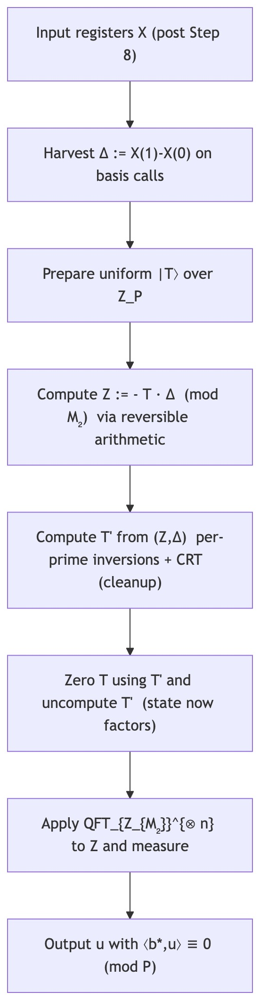

The Problem: An Erroneous Step
Recent work by Chen et al. (2024) introduced a powerful quantum algorithm for lattice problems. However, a critical subroutine, Step 9, which is responsible for enforcing a modular linear constraint, contained an error. The original step attempts a “domain extension” that misuses amplitude periodicity, leading to a quantum state with support of the incorrect size and hence an incorrect Fourier sampling distribution. The goal is to produce a random vector $\mathbf{u}$ that satisfies: $$ \langle \mathbf{b}^*, \mathbf{u} \rangle \equiv 0 \pmod{P} $$
Our Solution: Step $9^\dagger$
Our replacement is a self‑contained unitary. The core idea is to synthesize a uniform cyclic coset by coherently shifting along the $\mathbf b^*$ direction and taking a difference that cancels offsets. We emphasize a J‑free default realization that avoids re‑evaluating the state‑preparation on superpositions and uses only classical reversible arithmetic.

Figure: Corrected Step $9^\dagger$. The procedure factors the state and yields an exactly uniform superposition over a CRT‑coset; a QFT then enforces the modular relation. (A re‑evaluation variant with an auxiliary copy is also supported.)
Key Advantages
- Correctness: Provably enforces the intended modular hyperplane via character orthogonality.
- Exact Offset Cancellation: The unknown offsets $\mathbf{v}^*$ are removed identically by the pair‑shift difference; no knowledge of $\mathbf{v}^*$ is required.
- No Reliance on Amplitude Periodicity: Our subroutine does not use any arguments based on amplitude periodicity or phase flattening, which were the source of the original error.
- Efficiency: Uses only $\mathrm{poly}(\log M_2)$ gates and is fully reversible; asymptotics are preserved.
- Simplicity: Built from standard primitives (QFT, modular arithmetic, CNOT) with phase‑free classical reversible arithmetic.
- Mild Assumption: A residue‑accessibility condition is needed only for coherent cleanup (to erase the coset label); all other steps are unconditional.